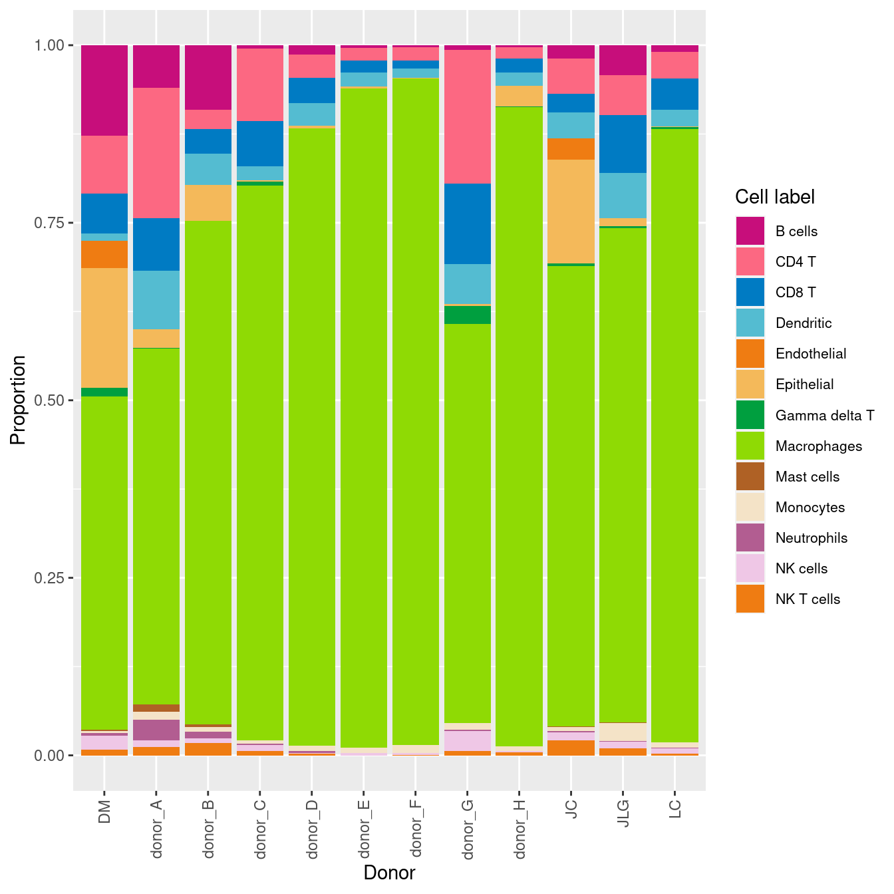
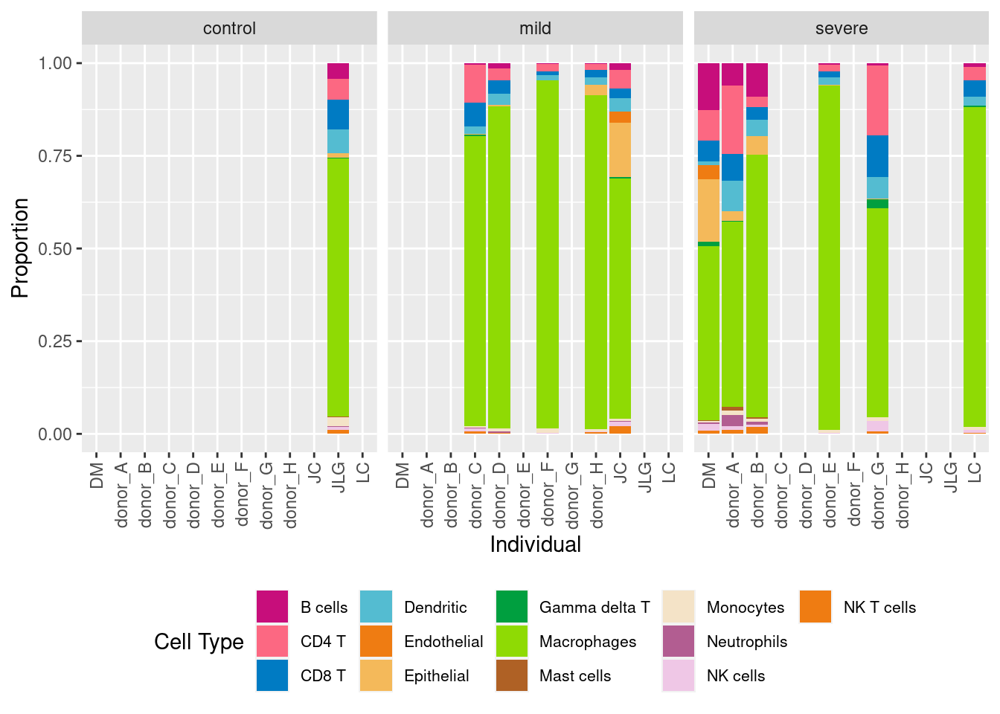
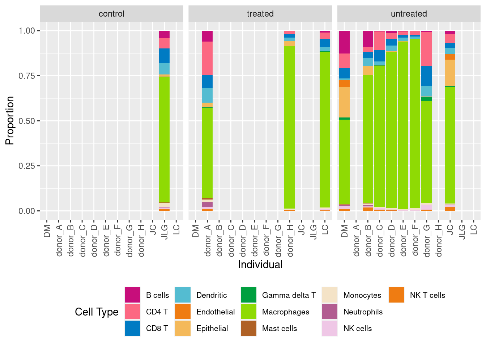
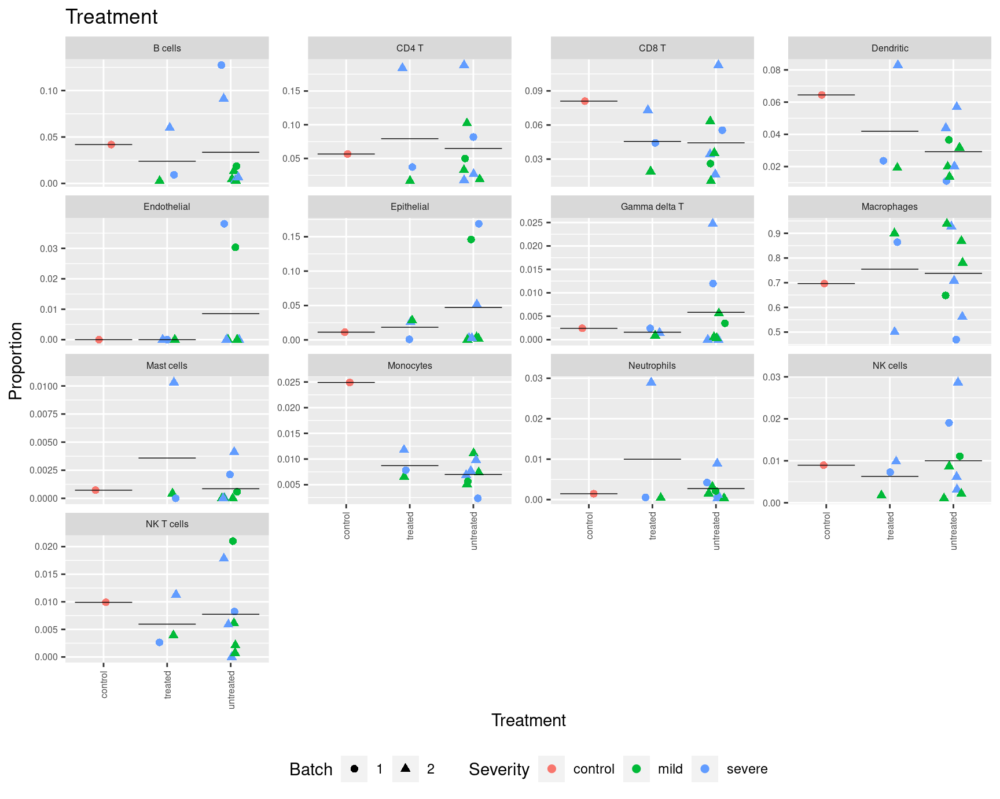
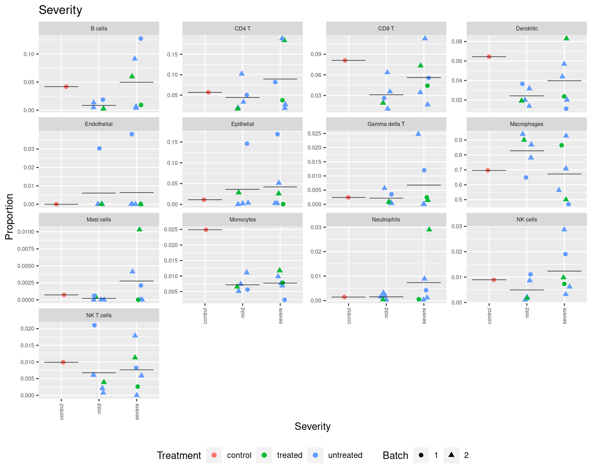

Last updated: 2022-04-26
Checks: 7 0
Knit directory: paed-cf-cite-seq/
This reproducible R Markdown analysis was created with workflowr (version 1.7.0). The Checks tab describes the reproducibility checks that were applied when the results were created. The Past versions tab lists the development history.
Great! Since the R Markdown file has been committed to the Git repository, you know the exact version of the code that produced these results.
Great job! The global environment was empty. Objects defined in the global environment can affect the analysis in your R Markdown file in unknown ways. For reproduciblity it’s best to always run the code in an empty environment.
The command set.seed(20210524) was run prior to running the code in the R Markdown file. Setting a seed ensures that any results that rely on randomness, e.g. subsampling or permutations, are reproducible.
Great job! Recording the operating system, R version, and package versions is critical for reproducibility.
Nice! There were no cached chunks for this analysis, so you can be confident that you successfully produced the results during this run.
Great job! Using relative paths to the files within your workflowr project makes it easier to run your code on other machines.
Great! You are using Git for version control. Tracking code development and connecting the code version to the results is critical for reproducibility.
The results in this page were generated with repository version 51eeb40. See the Past versions tab to see a history of the changes made to the R Markdown and HTML files.
Note that you need to be careful to ensure that all relevant files for the analysis have been committed to Git prior to generating the results (you can use wflow_publish or wflow_git_commit). workflowr only checks the R Markdown file, but you know if there are other scripts or data files that it depends on. Below is the status of the Git repository when the results were generated:
Ignored files:
Ignored: .Rhistory
Ignored: .Rproj.user/
Ignored: data/CellRanger/
Ignored: data/emptyDrops/bin/
Ignored: renv/library/
Ignored: renv/staging/
Untracked files:
Untracked: Rplots.pdf
Untracked: analysis/03_COMBO.annotation_markers.Rmd
Untracked: analysis/03_COMBO.protein_analysis.Rmd
Untracked: analysis/04_COMBO.compare_annotations.Rmd
Untracked: analysis/04_COMBO.expression_analysis.Rmd
Untracked: analysis/04_COMBO_expression_analysis.Rmd
Untracked: analysis/scGateDB/
Untracked: code/03_C133_Neeland-dropletutils.R
Untracked: code/03_COMBO.proteins_geneBasis.R
Untracked: data/190930_A00152_0150_BHTYCMDSXX/
Untracked: data/Flow_data_CITEseq_2-8.csv
Untracked: data/GSE127465_RAW/
Untracked: data/GSE130148_barcodes_cell_types.txt
Untracked: data/GSE130148_raw_counts.RData
Untracked: data/Macrophage_subcluster_annotation_110322.csv
Untracked: data/Other_subcluster_annotation_110322.csv
Untracked: data/T-NK_subcluster_annotation_110322.csv
Untracked: data/T-NK_subcluster_proteins.csv
Untracked: data/T-NK_subcluster_proteins_110322.csv
Untracked: data/T-NK_subclusters_cytokines.csv
Untracked: data/T-NK_subclusters_markergenes_110322.csv
Untracked: data/TNK_subcluster_annotation_09.04.22.csv
Untracked: data/all_azimuth_cluster_cytokines.csv
Untracked: data/all_azimuth_clusters_proteins.csv
Untracked: data/cell_type_category_rna_Granulocytes_Cell.tsv
Untracked: data/consolidated_markers.rds
Untracked: data/gb-genes-50.rds
Untracked: data/genome1K.phase3.SNP_AF5e4.chr1toX.hg38.vcf.gz
Untracked: data/macrophage_subcluster_annotation_09.04.22.csv
Untracked: data/macrophage_subcluster_cytokines.csv
Untracked: data/macrophage_subcluster_markergenes_110322.csv
Untracked: data/macrophage_subcluster_markergenes_160322.csv
Untracked: data/macrophage_subcluster_proteins.csv
Untracked: data/macrophage_subcluster_proteins_110322.csv
Untracked: data/nCoV.all.cell.annotation.meta.txt
Untracked: data/nCoV.rds
Untracked: data/neutrophil.tsv
Untracked: data/other_subcluster_proteins.csv
Untracked: data/other_subcluster_proteins_110322.csv
Untracked: data/other_subclusters_cytokines.csv
Untracked: data/other_subclusters_markergenes_110322.csv
Untracked: data/others_subcluster_annotation_09.04.22.csv
Untracked: data/proteins_ranked.rds
Untracked: data/sample_sheets/Hashtag_Feature_Ref_With_Clin.csv
Untracked: data/sample_sheets/TotalSeq_A_Human_Universal_Cocktail_Proteins of interest_29.09.21.csv
Untracked: data/sample_sheets/TotalSeq_A_Human_Universal_Cocktail_Proteins_of_interest_28.06.21.csv
Untracked: output/ADT-counts.csv
Untracked: output/C133_Neeland.azimuth.individual_cell_type_proportions.csv
Untracked: output/C133_Neeland.azimuth.phenotype_information.csv
Untracked: output/C133_Neeland.individual_cell_type_proportions.csv
Untracked: output/C133_Neeland.phenotype_information.csv
Untracked: output/DEGs-New/
Untracked: output/DEGs/
Untracked: output/glimma-plots/js/labelled-singlets-md-plot.js
Untracked: output/glimma-plots/js/qc-md-plot_03_C133_Neeland.js
Untracked: output/glimma-plots/js/qc-md-plot_C133_Neeland.js
Untracked: output/glimma-plots/js/qc-md-plot_CF-BAL-Pilot.js
Untracked: output/glimma-plots/labelled-singlets-md-plot.html
Untracked: output/glimma-plots/qc-md-plot_03_C133_Neeland.html
Untracked: output/glimma-plots/qc-md-plot_C133_Neeland.html
Untracked: output/glimma-plots/qc-md-plot_CF-BAL-Pilot.html
Untracked: output/marker-analysis-mod/
Untracked: output/marker-analysis/
Untracked: output/metadata.csv
Untracked: output/protein_labels.pdf
Untracked: scGateDB/
Untracked: wflow_background.R
Unstaged changes:
Modified: analysis/01_C133_Neeland.azimuth.expression_differences.Rmd
Modified: analysis/03_COMBO.cluster_macrophages.Rmd
Modified: analysis/03_COMBO.compare_annotations.Rmd
Modified: analysis/03_COMBO.proportion_analysis.Rmd
Modified: code/utility.R
Modified: data/SCEs/C133_Neeland.CellRanger.SCE.rds
Modified: data/SCEs/C133_Neeland.demultiplexed.SCE.rds
Deleted: data/SCEs/C133_Neeland.preprocessed.SCE.hto.rds
Deleted: data/SCEs/C133_Neeland.preprocessed.SCE_hto.rds
Deleted: data/SCEs/C133_Neeland.preprocessed.SCE_snp.rds
Modified: data/sample_sheets/TotalSeq-A_Universal_Cocktail_v1.0.csv
Modified: data/vireo/C133_1/GT_donors.vireo.vcf.gz
Modified: data/vireo/C133_1/_log.txt
Modified: data/vireo/C133_1/donor_ids.tsv
Modified: data/vireo/C133_1/fig_GT_distance_estimated.pdf
Modified: data/vireo/C133_1/prob_doublet.tsv.gz
Modified: data/vireo/C133_1/prob_singlet.tsv.gz
Modified: data/vireo/C133_1/summary.tsv
Modified: data/vireo/C133_2/GT_donors.vireo.vcf.gz
Modified: data/vireo/C133_2/_log.txt
Modified: data/vireo/C133_2/donor_ids.tsv
Modified: data/vireo/C133_2/fig_GT_distance_estimated.pdf
Modified: data/vireo/C133_2/prob_doublet.tsv.gz
Modified: data/vireo/C133_2/prob_singlet.tsv.gz
Modified: data/vireo/C133_2/summary.tsv
Modified: output/glimma-plots/js/qc-md-plot.js
Modified: output/glimma-plots/js/stripped-nuclei-md-plot.js
Modified: renv/.gitignore
Modified: renv/activate.R
Modified: renv/settings.dcf
Note that any generated files, e.g. HTML, png, CSS, etc., are not included in this status report because it is ok for generated content to have uncommitted changes.
These are the previous versions of the repository in which changes were made to the R Markdown (analysis/04_COMBO.proportion_analysis.Rmd) and HTML (docs/04_COMBO.proportion_analysis.html) files. If you’ve configured a remote Git repository (see ?wflow_git_remote), click on the hyperlinks in the table below to view the files as they were in that past version.
| File | Version | Author | Date | Message |
|---|---|---|---|---|
| Rmd | 51eeb40 | Jovana Maksimovic | 2022-04-26 | wflow_publish(c("analysis/index.Rmd", "analysis/04_COMBO.proportion_analysis.Rmd")) |
library(Seurat)
library(tidyverse)
library(here)
library(glue)
library(DropletUtils)
library(scran)
library(scater)
library(scuttle)
library(Matrix)
library(edgeR)
library(patchwork)
library(AnnotationHub)
library(ensembldb)
library(org.Hs.eg.db)
library(glmGamPoi)
library(BiocParallel)
library(janitor)
library(scales)
library(speckle)
source(here("code/utility.R"))
source(here("code/helper_functions.R"))
set.seed(42)
options(scipen=999)
options(future.globals.maxSize = 6500 * 1024^2)seu1 <- readRDS(here("data/SCEs/04_COMBO.clean_macrophages_diet.SEU.rds"))
seu2 <- readRDS(here("data/SCEs/04_COMBO.clean_tcells_diet.SEU.rds"))
seu3 <- readRDS(here("data/SCEs/04_COMBO.clean_others_diet.SEU.rds"))
seu <- merge(seu1, y = c(seu2, seu3)) used (Mb) gc trigger (Mb) max used (Mb)
Ncells 11523439 615.5 17397001 929.2 12923653 690.2
Vcells 495347655 3779.3 1404895673 10718.6 1249470528 9532.8# Differences in cell type proportions
props <- getTransformedProps(clusters = seu$Broad,
sample = seu$donor, transform="asin")
props$Proportions %>% knitr::kable()| DM | donor_A | donor_B | donor_C | donor_D | donor_E | donor_F | donor_G | donor_H | JC | JLG | LC | |
|---|---|---|---|---|---|---|---|---|---|---|---|---|
| B cells | 0.1274095 | 0.0598920 | 0.0912835 | 0.0045965 | 0.0132275 | 0.0035189 | 0.0028694 | 0.0066745 | 0.0026189 | 0.0186625 | 0.0418380 | 0.0092654 |
| CD4 T | 0.0818054 | 0.1840943 | 0.0267673 | 0.1021450 | 0.0328042 | 0.0179143 | 0.0190100 | 0.1884570 | 0.0165866 | 0.0499611 | 0.0565901 | 0.0372822 |
| CD8 T | 0.0554772 | 0.0731468 | 0.0343171 | 0.0633299 | 0.0354497 | 0.0166347 | 0.0107604 | 0.1126816 | 0.0192056 | 0.0260498 | 0.0810157 | 0.0442312 |
| Dendritic | 0.0110484 | 0.0829651 | 0.0439259 | 0.0199183 | 0.0317460 | 0.0201536 | 0.0136298 | 0.0569297 | 0.0192056 | 0.0365474 | 0.0644498 | 0.0236047 |
| Endothelial | 0.0380818 | 0.0000000 | 0.0000000 | 0.0000000 | 0.0000000 | 0.0000000 | 0.0000000 | 0.0000000 | 0.0000000 | 0.0303266 | 0.0000000 | 0.0000000 |
| Epithelial | 0.1687823 | 0.0260187 | 0.0514756 | 0.0020429 | 0.0037037 | 0.0025592 | 0.0003587 | 0.0027483 | 0.0283719 | 0.1459953 | 0.0112455 | 0.0007721 |
| Gamma delta T | 0.0119887 | 0.0014728 | 0.0000000 | 0.0056180 | 0.0005291 | 0.0000000 | 0.0003587 | 0.0247350 | 0.0008730 | 0.0034992 | 0.0024184 | 0.0024266 |
| Macrophages | 0.4694405 | 0.5002455 | 0.7083047 | 0.7808989 | 0.8687831 | 0.9280230 | 0.9386657 | 0.5622301 | 0.9000436 | 0.6485226 | 0.6964933 | 0.8641077 |
| Mast cells | 0.0021157 | 0.0103093 | 0.0041181 | 0.0000000 | 0.0000000 | 0.0000000 | 0.0000000 | 0.0000000 | 0.0004365 | 0.0005832 | 0.0007255 | 0.0000000 |
| Monocytes | 0.0023507 | 0.0117820 | 0.0068634 | 0.0051073 | 0.0074074 | 0.0076775 | 0.0111191 | 0.0098155 | 0.0065474 | 0.0056376 | 0.0249093 | 0.0078315 |
| Neutrophils | 0.0042313 | 0.0289642 | 0.0089224 | 0.0015322 | 0.0031746 | 0.0003199 | 0.0003587 | 0.0011779 | 0.0004365 | 0.0021384 | 0.0014510 | 0.0005515 |
| NK cells | 0.0190409 | 0.0098184 | 0.0061771 | 0.0086823 | 0.0010582 | 0.0031990 | 0.0021521 | 0.0286612 | 0.0017460 | 0.0110809 | 0.0089480 | 0.0072799 |
| NK T cells | 0.0082276 | 0.0112911 | 0.0178449 | 0.0061287 | 0.0021164 | 0.0000000 | 0.0007174 | 0.0058893 | 0.0039284 | 0.0209953 | 0.0099154 | 0.0026473 |
props$Proportions %>%
data.frame %>%
ggplot(aes(x = sample, y = Freq, fill = clusters)) +
geom_bar(stat = "identity") +
theme(axis.text.x = element_text(angle = 90,
vjust = 0.5,
hjust = 1),
legend.text = element_text(size = 8)) +
labs(x = "Donor", y = "Proportion", fill = "Cell label") +
paletteer::scale_fill_paletteer_d("LaCroixColoR::paired")
Import clinical characteristics and patient information and associate with genetic_donor IDs.
info <- read.csv(file = here("data/sample_sheets/Hashtag_Feature_Ref_With_Clin.csv"))
info$Severity <- strsplit2(info$Clinical_characteristic, " ")[,1]
info$Treatment <- strsplit2(info$Clinical_characteristic, " ")[,3]
tab <- table(seu$HTO, seu$donor)
apply(tab, 2, function(x){
names(which(x == max(x)))
}) %>% data.frame %>%
dplyr::rename("HTO" = ".") %>%
rownames_to_column(var = "donor") %>%
inner_join(info, by = c("HTO" = "id")) %>%
dplyr::select(-read,
-pattern,
-sequence,
-feature_type,
-X) %>%
dplyr::mutate(Disease = "CF") -> info
bind_rows(info, data.frame(donor = c("JC", "DM", "JLG", "LC"),
Disease = c("CF", "CF", "Ctrl", "CF"),
Severity = c("mild", "severe", "control", "severe"),
Treatment = c("untreated", "untreated", "control", "treated"),
Age = rep(3, 4),
Sex = c("M","F","M","M"))) %>%
mutate(Batch = c(rep(2, 8,), rep(1, 4))) -> info
info %>% knitr::kable()| donor | HTO | name | Clinical_characteristic | Sex | Age | Severity | Treatment | Disease | Batch |
|---|---|---|---|---|---|---|---|---|---|
| donor_A | Human_HTO_8 | Human_8 | severe disease treated | M | 6 | severe | treated | CF | 2 |
| donor_B | Human_HTO_1 | Human_1 | severe disease untreated | F | 6 | severe | untreated | CF | 2 |
| donor_C | Human_HTO_4 | Human_4 | mild disease untreated | F | 6 | mild | untreated | CF | 2 |
| donor_D | Human_HTO_6 | Human_6 | mild disease untreated | M | 5 | mild | untreated | CF | 2 |
| donor_E | Human_HTO_3 | Human_3 | severe disease untreated | F | 5 | severe | untreated | CF | 2 |
| donor_F | Human_HTO_5 | Human_5 | mild disease untreated | F | 6 | mild | untreated | CF | 2 |
| donor_G | Human_HTO_2 | Human_2 | severe disease untreated | F | 6 | severe | untreated | CF | 2 |
| donor_H | Human_HTO_7 | Human_7 | mild disease treated | M | 5 | mild | treated | CF | 2 |
| JC | NA | NA | NA | M | 3 | mild | untreated | CF | 1 |
| DM | NA | NA | NA | F | 3 | severe | untreated | CF | 1 |
| JLG | NA | NA | NA | M | 3 | control | control | Ctrl | 1 |
| LC | NA | NA | NA | M | 3 | severe | treated | CF | 1 |
Cell type proportions by individual and severity plus treatment.
props$Proportions %>% data.frame %>%
inner_join(info, by = c("sample" = "donor")) %>%
ggplot(aes(x = sample, y = Freq, fill = clusters)) +
geom_bar(stat = "identity") +
theme(axis.text.x = element_text(angle = 90,
hjust = 1,
vjust = 0.5)) +
labs(x = "Individual", y = "Proportion", fill = "Cell Type") +
facet_wrap(~ Severity, ncol = 3) +
theme(legend.position = "bottom",
legend.text = element_text(size = 8)) +
paletteer::scale_fill_paletteer_d("LaCroixColoR::paired")
Cell type proportions by individual and treatment.
props$Proportions %>% data.frame %>%
inner_join(info, by = c("sample" = "donor")) %>%
ggplot(aes(x = sample, y = Freq, fill = clusters)) +
geom_bar(stat = "identity") +
theme(axis.text.x = element_text(angle = 90,
hjust = 1,
vjust = 0.5)) +
labs(x = "Individual", y = "Proportion", fill = "Cell Type") +
facet_wrap(~ Treatment, ncol = 3) +
theme(legend.position = "bottom",
legend.text = element_text(size = 8)) +
paletteer::scale_fill_paletteer_d("LaCroixColoR::paired")
We can set up a design matrix taking into account various aspects of the data, such as disease severity, treatment and Batch. Please note that the way that propeller has been designed is such that the group information is always first in the design matrix specification, and there is NO intercept.
Group <- factor(paste(info$Severity, info$Treatment, sep="."))
Batch <- factor(info$Batch)
design <- model.matrix(~ 0 + Group + Batch)
colnames(design) <- c("C","MT","MU",
"ST","SU", "Batch")
design C MT MU ST SU Batch
1 0 0 0 1 0 1
2 0 0 0 0 1 1
3 0 0 1 0 0 1
4 0 0 1 0 0 1
5 0 0 0 0 1 1
6 0 0 1 0 0 1
7 0 0 0 0 1 1
8 0 1 0 0 0 1
9 0 0 1 0 0 0
10 0 0 0 0 1 0
11 1 0 0 0 0 0
12 0 0 0 1 0 0
attr(,"assign")
[1] 1 1 1 1 1 2
attr(,"contrasts")
attr(,"contrasts")$Group
[1] "contr.treatment"
attr(,"contrasts")$Batch
[1] "contr.treatment"We have 4 groups: severe disease treated, severe disease untreated, mild disease untreated, mild disease untreated, severe disease untreated, mild disease untreated, severe disease untreated, mild disease treated, NA, NA, NA, NA. In order to perform an ANOVA to test for cell type composition differences between these 4 groups, we can use the propeller.anova function. The coef argument tells the function which columns of the design matrix correspond to the groups we are interested in testing. Here we are interested in the first 4 columns.
propeller.anova(prop.list = props, design = design, coef = c(1:5),
robust = TRUE, trend = FALSE, sort = TRUE) %>% knitr::kable()| PropMean.C | PropMean.MT | PropMean.MU | PropMean.ST | PropMean.SU | Fstatistic | P.Value | FDR | |
|---|---|---|---|---|---|---|---|---|
| Gamma delta T | 0.0024184 | 0.0247350 | 0.0016227 | 0.0072077 | 0.0014649 | 2.6342997 | 0.1139579 | 0.8395097 |
| CD8 T | 0.0810157 | 0.1126816 | 0.0333718 | 0.0498542 | 0.0363517 | 2.3448089 | 0.1422359 | 0.8395097 |
| NK cells | 0.0089480 | 0.0286612 | 0.0049511 | 0.0131604 | 0.0060274 | 1.6795424 | 0.2470500 | 0.8395097 |
| Monocytes | 0.0249093 | 0.0098155 | 0.0065489 | 0.0050911 | 0.0089865 | 1.4513674 | 0.3027925 | 0.8395097 |
| Dendritic | 0.0644498 | 0.0569297 | 0.0258008 | 0.0173266 | 0.0412221 | 1.2945879 | 0.3495852 | 0.8395097 |
| CD4 T | 0.0565901 | 0.1884570 | 0.0408533 | 0.0595438 | 0.0714674 | 1.1876575 | 0.3874660 | 0.8395097 |
| B cells | 0.0418380 | 0.0066745 | 0.0255045 | 0.0683374 | 0.0236629 | 0.9439539 | 0.4872886 | 0.9049645 |
| Macrophages | 0.6964933 | 0.5622301 | 0.8293176 | 0.6667741 | 0.7390542 | 0.6824499 | 0.6239765 | 0.9498527 |
| Endothelial | 0.0000000 | 0.0000000 | 0.0000000 | 0.0190409 | 0.0075816 | 0.6257735 | 0.6575904 | 0.9498527 |
| Neutrophils | 0.0014510 | 0.0011779 | 0.0028028 | 0.0023914 | 0.0086590 | 0.2556534 | 0.8982267 | 0.9942515 |
| Epithelial | 0.0112455 | 0.0027483 | 0.0211124 | 0.0847772 | 0.0440191 | 0.2470220 | 0.9034123 | 0.9942515 |
| Mast cells | 0.0007255 | 0.0000000 | 0.0011386 | 0.0010578 | 0.0027231 | 0.1374895 | 0.9636740 | 0.9942515 |
| NK T cells | 0.0099154 | 0.0058893 | 0.0069755 | 0.0054374 | 0.0087801 | 0.0503685 | 0.9942515 | 0.9942515 |
Stripchart of cell type proportion, stratified by cell type and treatment.
props$Proportions %>% data.frame %>%
left_join(info,
by = c("sample" = "donor")) %>%
ggplot(aes(x = Treatment,
y = Freq,
colour = Severity,
shape = factor(Batch))) +
geom_jitter(stat = "identity",
width = 0.15,
size = 2) +
stat_summary(aes(x = Treatment, y = Freq),
inherit.aes = FALSE,
fun = "mean",
geom = "crossbar",
size = 0.1) +
theme(axis.text.x = element_text(angle = 90,
hjust = 1,
vjust = 0.5),
legend.position = "bottom",
strip.text = element_text(size = 6),
axis.text = element_text(size = 6)) +
labs(x = "Treatment", y = "Proportion",
colour = "Severity", shape = "Batch") +
ggtitle("Treatment") +
facet_wrap(~ clusters, scales = "free_y") -> p1
p1
As we are interested in testing the effect of treatment within the severity groups we can use the propeller.ttest function and specify a contrast that tests for this comparison with our design matrix.
First test for differences in proportions by treatment for mild disease.
mycontr <- makeContrasts(MUvMT = MU-MT,
SUvST = SU-ST,
MvSall = 0.5*(MU + MT) - 0.5*(SU + ST),
MvSun = MU-SU,
CvAll = C - 0.25*(SU + ST + MU + MT),
levels=design)
mycontr Contrasts
Levels MUvMT SUvST MvSall MvSun CvAll
C 0 0 0.0 0 1.00
MT -1 0 0.5 0 -0.25
MU 1 0 0.5 1 -0.25
ST 0 -1 -0.5 0 -0.25
SU 0 1 -0.5 -1 -0.25
Batch 0 0 0.0 0 0.00propeller.ttest(props, design, contrasts = mycontr[,1], robust=TRUE, trend=FALSE,
sort=TRUE) %>% knitr::kable()| PropMean.MT | PropMean.MU | PropRatio | Tstatistic | P.Value | FDR | |
|---|---|---|---|---|---|---|
| Gamma delta T | 0.0247350 | 0.0016227 | 0.0656050 | -2.9372972 | 0.0188909 | 0.2266865 |
| CD8 T | 0.1126816 | 0.0333718 | 0.2961604 | -2.3084619 | 0.0499666 | 0.2266865 |
| NK cells | 0.0286612 | 0.0049511 | 0.1727454 | -2.2144570 | 0.0578443 | 0.2266865 |
| CD4 T | 0.1884570 | 0.0408533 | 0.2167779 | -2.1010196 | 0.0697497 | 0.2266865 |
| Dendritic | 0.0569297 | 0.0258008 | 0.4532048 | -1.2644665 | 0.2418288 | 0.5367486 |
| Macrophages | 0.5622301 | 0.8293176 | 1.4750502 | 1.2494398 | 0.2477301 | 0.5367486 |
| B cells | 0.0066745 | 0.0255045 | 3.8211669 | 0.5489876 | 0.5983892 | 0.9111968 |
| Monocytes | 0.0098155 | 0.0065489 | 0.6672012 | -0.5334285 | 0.6083054 | 0.9111968 |
| Mast cells | 0.0000000 | 0.0011386 | Inf | 0.4924113 | 0.6357220 | 0.9111968 |
| Epithelial | 0.0027483 | 0.0211124 | 7.6818982 | 0.3456087 | 0.7387821 | 0.9111968 |
| Neutrophils | 0.0011779 | 0.0028028 | 2.3795363 | 0.2976295 | 0.7736060 | 0.9111968 |
| NK T cells | 0.0058893 | 0.0069755 | 1.1844401 | -0.2071356 | 0.8411047 | 0.9111968 |
| Endothelial | 0.0000000 | 0.0000000 | NaN | -0.0471636 | 0.9635525 | 0.9635525 |
There are no statistically significant differences in proportion by treatment for mild disease samples.
Test for differences in proportions by treatment for severe disease.
propeller.ttest(props, design, contrasts = mycontr[,2], robust = TRUE,
trend = FALSE, sort=TRUE) %>% knitr::kable()| PropMean.ST | PropMean.SU | PropRatio | Tstatistic | P.Value | FDR | |
|---|---|---|---|---|---|---|
| Dendritic | 0.0173266 | 0.0412221 | 2.3791298 | 1.2866848 | 0.2343611 | 0.8145404 |
| Gamma delta T | 0.0072077 | 0.0014649 | 0.2032469 | -1.2854827 | 0.2347601 | 0.8145404 |
| B cells | 0.0683374 | 0.0236629 | 0.3462651 | -1.2727034 | 0.2397842 | 0.8145404 |
| NK cells | 0.0131604 | 0.0060274 | 0.4579927 | -1.2223673 | 0.2565274 | 0.8145404 |
| CD8 T | 0.0498542 | 0.0363517 | 0.7291597 | -0.9737887 | 0.3588213 | 0.8145404 |
| Monocytes | 0.0050911 | 0.0089865 | 1.7651492 | 0.9377677 | 0.3759417 | 0.8145404 |
| Endothelial | 0.0190409 | 0.0075816 | 0.3981769 | -0.7349543 | 0.4835965 | 0.8970825 |
| Macrophages | 0.6667741 | 0.7390542 | 1.1084027 | 0.6121775 | 0.5578575 | 0.8970825 |
| Neutrophils | 0.0023914 | 0.0086590 | 3.6208596 | 0.4369349 | 0.6737695 | 0.8970825 |
| Epithelial | 0.0847772 | 0.0440191 | 0.5192326 | -0.4139597 | 0.6900634 | 0.8970825 |
| NK T cells | 0.0054374 | 0.0087801 | 1.6147514 | 0.3058282 | 0.7675810 | 0.9071412 |
| CD4 T | 0.0595438 | 0.0714674 | 1.2002503 | -0.1206202 | 0.9070441 | 0.9105022 |
| Mast cells | 0.0010578 | 0.0027231 | 2.5742566 | 0.1160306 | 0.9105022 | 0.9105022 |
There are no statistically significant differences in proportion by treatment for severe disease samples.
Stripchart of cell type proportions, stratified by cell type and severity.
props$Proportions %>% data.frame %>%
left_join(info,
by = c("sample" = "donor")) %>%
ggplot(aes(x = Severity,
y = Freq,
colour = Treatment,
shape = factor(Batch))) +
geom_jitter(stat = "identity",
width = 0.15,
size = 2) +
stat_summary(aes(x = Severity, y = Freq),
inherit.aes = FALSE,
fun = "mean",
geom = "crossbar",
size = 0.1) +
theme(axis.text.x = element_text(angle = 90,
hjust = 1,
vjust = 0.5),
legend.position = "bottom",
strip.text = element_text(size = 6),
axis.text = element_text(size = 6)) +
labs(x = "Severity", y = "Proportion",
colour = "Treatment", shape = "Batch") +
ggtitle("Severity") +
facet_wrap(~ clusters, scales = "free_y") -> p1
p1
Test for differences in proportions between severe and mild disease, across all samples.
propeller.ttest(props, design, contrasts = mycontr[,3], robust=TRUE, trend=FALSE,
sort=TRUE) %>% knitr::kable()| PropMean.MT | PropMean.MU | PropMean.ST | PropMean.SU | PropRatio | Tstatistic | P.Value | FDR | |
|---|---|---|---|---|---|---|---|---|
| B cells | 0.0066745 | 0.0255045 | 0.0683374 | 0.0236629 | 0.3244553 | -1.4194602 | 0.1945099 | 0.6803237 |
| Gamma delta T | 0.0247350 | 0.0016227 | 0.0072077 | 0.0014649 | 1.9497215 | 1.1982418 | 0.2652805 | 0.6803237 |
| Endothelial | 0.0000000 | 0.0000000 | 0.0190409 | 0.0075816 | 0.0000000 | -1.1842404 | 0.2706985 | 0.6803237 |
| CD8 T | 0.1126816 | 0.0333718 | 0.0498542 | 0.0363517 | 1.4404672 | 1.0859608 | 0.3092863 | 0.6803237 |
| Dendritic | 0.0569297 | 0.0258008 | 0.0173266 | 0.0412221 | 1.4340528 | 0.8919652 | 0.3985726 | 0.6803237 |
| NK cells | 0.0286612 | 0.0049511 | 0.0131604 | 0.0060274 | 1.3375130 | 0.8645264 | 0.4125928 | 0.6803237 |
| Epithelial | 0.0027483 | 0.0211124 | 0.0847772 | 0.0440191 | 0.1246933 | -0.8280274 | 0.4322837 | 0.6803237 |
| CD4 T | 0.1884570 | 0.0408533 | 0.0595438 | 0.0714674 | 1.3450787 | 0.7706184 | 0.4636565 | 0.6803237 |
| Neutrophils | 0.0011779 | 0.0028028 | 0.0023914 | 0.0086590 | 0.3992807 | -0.7567667 | 0.4709933 | 0.6803237 |
| Mast cells | 0.0000000 | 0.0011386 | 0.0010578 | 0.0027231 | 0.0000000 | -0.6221998 | 0.5512128 | 0.7165767 |
| Monocytes | 0.0098155 | 0.0065489 | 0.0050911 | 0.0089865 | 1.1853257 | 0.3985755 | 0.7006841 | 0.8280812 |
| Macrophages | 0.5622301 | 0.8293176 | 0.6667741 | 0.7390542 | 0.9727248 | 0.0596486 | 0.9539370 | 0.9720561 |
| NK T cells | 0.0058893 | 0.0069755 | 0.0054374 | 0.0087801 | 0.9276296 | 0.0361459 | 0.9720561 | 0.9720561 |
Test for differences in proportions between severe and mild disease, in only untreated samples.
propeller.ttest(props, design, contrasts = mycontr[,4], robust=TRUE, trend=FALSE,
sort=TRUE) %>% knitr::kable()| PropMean.MU | PropMean.SU | PropRatio | Tstatistic | P.Value | FDR | |
|---|---|---|---|---|---|---|
| Dendritic | 0.0258008 | 0.0412221 | 0.6258977 | -0.8968283 | 0.3961239 | 0.9095147 |
| Neutrophils | 0.0028028 | 0.0086590 | 0.3236821 | -0.8149217 | 0.4388174 | 0.9095147 |
| CD4 T | 0.0408533 | 0.0714674 | 0.5716357 | -0.8119132 | 0.4409381 | 0.9095147 |
| Endothelial | 0.0000000 | 0.0075816 | 0.0000000 | -0.7990899 | 0.4475790 | 0.9095147 |
| Macrophages | 0.8293176 | 0.7390542 | 1.1221336 | 0.6789133 | 0.5168471 | 0.9095147 |
| Monocytes | 0.0065489 | 0.0089865 | 0.7287447 | -0.6022137 | 0.5637887 | 0.9095147 |
| Mast cells | 0.0011386 | 0.0027231 | 0.4181362 | -0.3197467 | 0.7573915 | 0.9095147 |
| NK T cells | 0.0069755 | 0.0087801 | 0.7944715 | -0.3196737 | 0.7574448 | 0.9095147 |
| Epithelial | 0.0211124 | 0.0440191 | 0.4796192 | -0.3181644 | 0.7587202 | 0.9095147 |
| Gamma delta T | 0.0016227 | 0.0014649 | 1.1077181 | -0.3124387 | 0.7627354 | 0.9095147 |
| B cells | 0.0255045 | 0.0236629 | 1.0778259 | -0.2283020 | 0.8252888 | 0.9095147 |
| CD8 T | 0.0333718 | 0.0363517 | 0.9180271 | -0.1196703 | 0.9077096 | 0.9095147 |
| NK cells | 0.0049511 | 0.0060274 | 0.8214328 | -0.1173174 | 0.9095147 | 0.9095147 |
Test for differences in proportions between control and all CF samples.
propeller.ttest(props, design, contrasts = mycontr[,5], robust=TRUE, trend=FALSE,
sort=TRUE) %>% knitr::kable()| PropMean.C | PropMean.MT | PropMean.MU | PropMean.ST | PropMean.SU | PropRatio | Tstatistic | P.Value | FDR | |
|---|---|---|---|---|---|---|---|---|---|
| Monocytes | 0.0249093 | 0.0098155 | 0.0065489 | 0.0050911 | 0.0089865 | 3.3825255 | 1.9772025 | 0.0835906 | 0.9568406 |
| CD8 T | 0.0810157 | 0.1126816 | 0.0333718 | 0.0498542 | 0.0363517 | 1.5856399 | 1.1813401 | 0.2715582 | 0.9568406 |
| B cells | 0.0418380 | 0.0066745 | 0.0255045 | 0.0683374 | 0.0236629 | 1.8265437 | 1.1250724 | 0.2940187 | 0.9568406 |
| Dendritic | 0.0644498 | 0.0569297 | 0.0258008 | 0.0173266 | 0.0412221 | 2.0138075 | 1.0921457 | 0.3067193 | 0.9568406 |
| Gamma delta T | 0.0024184 | 0.0247350 | 0.0016227 | 0.0072077 | 0.0014649 | 0.5330041 | -0.5220027 | 0.6158792 | 0.9568406 |
| Endothelial | 0.0000000 | 0.0000000 | 0.0000000 | 0.0190409 | 0.0075816 | NaN | -0.5215038 | 0.6163062 | 0.9568406 |
| Macrophages | 0.6964933 | 0.5622301 | 0.8293176 | 0.6667741 | 0.7390542 | 1.0059919 | -0.3842651 | 0.7110563 | 0.9568406 |
| Mast cells | 0.0007255 | 0.0000000 | 0.0011386 | 0.0010578 | 0.0027231 | Inf | 0.3652107 | 0.7244679 | 0.9568406 |
| Epithelial | 0.0112455 | 0.0027483 | 0.0211124 | 0.0847772 | 0.0440191 | 0.5213096 | -0.3488315 | 0.7364542 | 0.9568406 |
| Neutrophils | 0.0014510 | 0.0011779 | 0.0028028 | 0.0023914 | 0.0086590 | 0.5046339 | 0.2525781 | 0.8069944 | 0.9568406 |
| NK T cells | 0.0099154 | 0.0058893 | 0.0069755 | 0.0054374 | 0.0087801 | 1.4899674 | 0.1663374 | 0.8720390 | 0.9568406 |
| NK cells | 0.0089480 | 0.0286612 | 0.0049511 | 0.0131604 | 0.0060274 | 0.8687164 | -0.0789309 | 0.9390358 | 0.9568406 |
| CD4 T | 0.0565901 | 0.1884570 | 0.0408533 | 0.0595438 | 0.0714674 | 0.7479875 | 0.0558840 | 0.9568406 | 0.9568406 |
There are no statistically significant difference in cell type proportions between the control samples and CF samples.
sessioninfo::session_info()─ Session info ───────────────────────────────────────────────────────────────
setting value
version R version 4.1.0 (2021-05-18)
os CentOS Linux 7 (Core)
system x86_64, linux-gnu
ui X11
language (EN)
collate en_AU.UTF-8
ctype en_AU.UTF-8
tz Australia/Melbourne
date 2022-04-26
pandoc 2.14.0.3 @ /usr/lib/rstudio-server/bin/pandoc/ (via rmarkdown)
─ Packages ───────────────────────────────────────────────────────────────────
! package * version date (UTC) lib source
P abind 1.4-5 2016-07-21 [?] CRAN (R 4.1.0)
P AnnotationDbi * 1.56.2 2021-11-09 [?] Bioconductor
P AnnotationFilter * 1.18.0 2021-10-26 [?] Bioconductor
P AnnotationHub * 3.2.0 2021-10-26 [?] Bioconductor
P assertthat 0.2.1 2019-03-21 [?] CRAN (R 4.1.0)
P backports 1.4.1 2021-12-13 [?] CRAN (R 4.1.0)
P beachmat 2.10.0 2021-10-26 [?] Bioconductor
P beeswarm 0.4.0 2021-06-01 [?] CRAN (R 4.1.0)
P Biobase * 2.54.0 2021-10-26 [?] Bioconductor
P BiocFileCache * 2.2.0 2021-10-26 [?] Bioconductor
P BiocGenerics * 0.40.0 2021-10-26 [?] Bioconductor
P BiocIO 1.4.0 2021-10-26 [?] Bioconductor
P BiocManager 1.30.16 2021-06-15 [?] CRAN (R 4.1.0)
P BiocNeighbors 1.12.0 2021-10-26 [?] Bioconductor
P BiocParallel * 1.28.3 2021-12-09 [?] Bioconductor
P BiocSingular 1.10.0 2021-10-26 [?] Bioconductor
P BiocVersion 3.14.0 2021-05-19 [?] Bioconductor
P biomaRt 2.50.1 2021-11-21 [?] Bioconductor
P Biostrings 2.62.0 2021-10-26 [?] Bioconductor
P bit 4.0.4 2020-08-04 [?] CRAN (R 4.1.0)
P bit64 4.0.5 2020-08-30 [?] CRAN (R 4.0.2)
P bitops 1.0-7 2021-04-24 [?] CRAN (R 4.0.2)
P blob 1.2.2 2021-07-23 [?] CRAN (R 4.1.0)
P bluster 1.4.0 2021-10-26 [?] Bioconductor
P broom 0.7.11 2022-01-03 [?] CRAN (R 4.1.0)
P bslib 0.3.1 2021-10-06 [?] CRAN (R 4.1.0)
P cachem 1.0.6 2021-08-19 [?] CRAN (R 4.1.0)
P callr 3.7.0 2021-04-20 [?] CRAN (R 4.1.0)
P cellranger 1.1.0 2016-07-27 [?] CRAN (R 4.1.0)
P cli 3.1.0 2021-10-27 [?] CRAN (R 4.1.0)
P cluster 2.1.2 2021-04-17 [?] CRAN (R 4.1.0)
P codetools 0.2-18 2020-11-04 [?] CRAN (R 4.1.0)
P colorspace 2.0-2 2021-06-24 [?] CRAN (R 4.0.2)
P cowplot 1.1.1 2020-12-30 [?] CRAN (R 4.0.2)
P crayon 1.4.2 2021-10-29 [?] CRAN (R 4.1.0)
P curl 4.3.2 2021-06-23 [?] CRAN (R 4.1.0)
P data.table 1.14.2 2021-09-27 [?] CRAN (R 4.1.0)
P DBI 1.1.2 2021-12-20 [?] CRAN (R 4.1.0)
P dbplyr * 2.1.1 2021-04-06 [?] CRAN (R 4.1.0)
P DelayedArray 0.20.0 2021-10-26 [?] Bioconductor
P DelayedMatrixStats 1.16.0 2021-10-26 [?] Bioconductor
P deldir 1.0-6 2021-10-23 [?] CRAN (R 4.1.0)
P digest 0.6.29 2021-12-01 [?] CRAN (R 4.1.0)
P dplyr * 1.0.7 2021-06-18 [?] CRAN (R 4.1.0)
P dqrng 0.3.0 2021-05-01 [?] CRAN (R 4.1.0)
P DropletUtils * 1.14.1 2021-11-08 [?] Bioconductor
P edgeR * 3.36.0 2021-10-26 [?] Bioconductor
P ellipsis 0.3.2 2021-04-29 [?] CRAN (R 4.0.2)
P ensembldb * 2.18.2 2021-11-08 [?] Bioconductor
P evaluate 0.14 2019-05-28 [?] CRAN (R 4.0.2)
P fansi 1.0.0 2022-01-10 [?] CRAN (R 4.1.0)
P farver 2.1.0 2021-02-28 [?] CRAN (R 4.0.2)
P fastmap 1.1.0 2021-01-25 [?] CRAN (R 4.1.0)
P filelock 1.0.2 2018-10-05 [?] CRAN (R 4.1.0)
P fitdistrplus 1.1-6 2021-09-28 [?] CRAN (R 4.1.0)
P forcats * 0.5.1 2021-01-27 [?] CRAN (R 4.1.0)
P fs 1.5.2 2021-12-08 [?] CRAN (R 4.1.0)
P future 1.23.0 2021-10-31 [?] CRAN (R 4.1.0)
P future.apply 1.8.1 2021-08-10 [?] CRAN (R 4.1.0)
P generics 0.1.1 2021-10-25 [?] CRAN (R 4.1.0)
GenomeInfoDb * 1.30.1 2022-01-30 [1] Bioconductor
P GenomeInfoDbData 1.2.7 2021-12-21 [?] Bioconductor
P GenomicAlignments 1.30.0 2021-10-26 [?] Bioconductor
P GenomicFeatures * 1.46.3 2021-12-30 [?] Bioconductor
P GenomicRanges * 1.46.1 2021-11-18 [?] Bioconductor
P getPass 0.2-2 2017-07-21 [?] CRAN (R 4.0.2)
P ggbeeswarm 0.6.0 2017-08-07 [?] CRAN (R 4.1.0)
P ggplot2 * 3.3.5 2021-06-25 [?] CRAN (R 4.0.2)
P ggrepel 0.9.1 2021-01-15 [?] CRAN (R 4.1.0)
P ggridges 0.5.3 2021-01-08 [?] CRAN (R 4.1.0)
P git2r 0.29.0 2021-11-22 [?] CRAN (R 4.1.0)
P glmGamPoi * 1.6.0 2021-10-26 [?] Bioconductor
P globals 0.14.0 2020-11-22 [?] CRAN (R 4.0.2)
P glue * 1.6.0 2021-12-17 [?] CRAN (R 4.1.0)
P goftest 1.2-3 2021-10-07 [?] CRAN (R 4.1.0)
P gridExtra 2.3 2017-09-09 [?] CRAN (R 4.1.0)
P gtable 0.3.0 2019-03-25 [?] CRAN (R 4.1.0)
P haven 2.4.3 2021-08-04 [?] CRAN (R 4.1.0)
P HDF5Array 1.22.1 2021-11-14 [?] Bioconductor
P here * 1.0.1 2020-12-13 [?] CRAN (R 4.0.2)
P highr 0.9 2021-04-16 [?] CRAN (R 4.1.0)
P hms 1.1.1 2021-09-26 [?] CRAN (R 4.1.0)
P htmltools 0.5.2 2021-08-25 [?] CRAN (R 4.1.0)
P htmlwidgets 1.5.4 2021-09-08 [?] CRAN (R 4.1.0)
P httpuv 1.6.5 2022-01-05 [?] CRAN (R 4.1.0)
P httr 1.4.2 2020-07-20 [?] CRAN (R 4.1.0)
P ica 1.0-2 2018-05-24 [?] CRAN (R 4.1.0)
P igraph 1.2.11 2022-01-04 [?] CRAN (R 4.1.0)
P interactiveDisplayBase 1.32.0 2021-10-26 [?] Bioconductor
P IRanges * 2.28.0 2021-10-26 [?] Bioconductor
P irlba 2.3.5 2021-12-06 [?] CRAN (R 4.1.0)
P janitor * 2.1.0 2021-01-05 [?] CRAN (R 4.0.2)
P jquerylib 0.1.4 2021-04-26 [?] CRAN (R 4.1.0)
P jsonlite 1.7.2 2020-12-09 [?] CRAN (R 4.0.2)
P KEGGREST 1.34.0 2021-10-26 [?] Bioconductor
P KernSmooth 2.23-20 2021-05-03 [?] CRAN (R 4.1.0)
P knitr 1.37 2021-12-16 [?] CRAN (R 4.1.0)
P labeling 0.4.2 2020-10-20 [?] CRAN (R 4.0.2)
P later 1.3.0 2021-08-18 [?] CRAN (R 4.1.0)
P lattice 0.20-45 2021-09-22 [?] CRAN (R 4.1.0)
P lazyeval 0.2.2 2019-03-15 [?] CRAN (R 4.1.0)
P leiden 0.3.9 2021-07-27 [?] CRAN (R 4.1.0)
P lifecycle 1.0.1 2021-09-24 [?] CRAN (R 4.1.0)
P limma * 3.50.0 2021-10-26 [?] Bioconductor
P listenv 0.8.0 2019-12-05 [?] CRAN (R 4.1.0)
P lmtest 0.9-39 2021-11-07 [?] CRAN (R 4.1.0)
P locfit 1.5-9.4 2020-03-25 [?] CRAN (R 4.1.0)
P lubridate 1.8.0 2021-10-07 [?] CRAN (R 4.1.0)
P magrittr 2.0.1 2020-11-17 [?] CRAN (R 4.0.2)
P MASS 7.3-53.1 2021-02-12 [?] CRAN (R 4.0.2)
P Matrix * 1.4-0 2021-12-08 [?] CRAN (R 4.1.0)
P MatrixGenerics * 1.6.0 2021-10-26 [?] Bioconductor
P matrixStats * 0.61.0 2021-09-17 [?] CRAN (R 4.1.0)
P memoise 2.0.1 2021-11-26 [?] CRAN (R 4.1.0)
P metapod 1.2.0 2021-10-26 [?] Bioconductor
P mgcv 1.8-38 2021-10-06 [?] CRAN (R 4.1.0)
P mime 0.12 2021-09-28 [?] CRAN (R 4.1.0)
P miniUI 0.1.1.1 2018-05-18 [?] CRAN (R 4.1.0)
P modelr 0.1.8 2020-05-19 [?] CRAN (R 4.0.2)
P munsell 0.5.0 2018-06-12 [?] CRAN (R 4.1.0)
P nlme 3.1-153 2021-09-07 [?] CRAN (R 4.1.0)
P org.Hs.eg.db * 3.14.0 2021-12-21 [?] Bioconductor
P org.Mm.eg.db 3.14.0 2022-01-24 [?] Bioconductor
P paletteer 1.4.0 2021-07-20 [?] CRAN (R 4.1.0)
P parallelly 1.30.0 2021-12-17 [?] CRAN (R 4.1.0)
P patchwork * 1.1.1 2020-12-17 [?] CRAN (R 4.0.2)
P pbapply 1.5-0 2021-09-16 [?] CRAN (R 4.1.0)
P pillar 1.6.4 2021-10-18 [?] CRAN (R 4.1.0)
P pkgconfig 2.0.3 2019-09-22 [?] CRAN (R 4.1.0)
P plotly 4.10.0 2021-10-09 [?] CRAN (R 4.1.0)
P plyr 1.8.6 2020-03-03 [?] CRAN (R 4.0.2)
P png 0.1-7 2013-12-03 [?] CRAN (R 4.1.0)
P polyclip 1.10-0 2019-03-14 [?] CRAN (R 4.1.0)
P prettyunits 1.1.1 2020-01-24 [?] CRAN (R 4.0.2)
P prismatic 1.1.0 2021-10-17 [?] CRAN (R 4.1.0)
P processx 3.5.2 2021-04-30 [?] CRAN (R 4.1.0)
P progress 1.2.2 2019-05-16 [?] CRAN (R 4.1.0)
P promises 1.2.0.1 2021-02-11 [?] CRAN (R 4.0.2)
P ProtGenerics 1.26.0 2021-10-26 [?] Bioconductor
P ps 1.6.0 2021-02-28 [?] CRAN (R 4.1.0)
P purrr * 0.3.4 2020-04-17 [?] CRAN (R 4.0.2)
P R.methodsS3 1.8.1 2020-08-26 [?] CRAN (R 4.0.2)
P R.oo 1.24.0 2020-08-26 [?] CRAN (R 4.0.2)
P R.utils 2.11.0 2021-09-26 [?] CRAN (R 4.1.0)
P R6 2.5.1 2021-08-19 [?] CRAN (R 4.1.0)
P RANN 2.6.1 2019-01-08 [?] CRAN (R 4.1.0)
P rappdirs 0.3.3 2021-01-31 [?] CRAN (R 4.0.2)
P RColorBrewer 1.1-2 2014-12-07 [?] CRAN (R 4.0.2)
P Rcpp 1.0.7 2021-07-07 [?] CRAN (R 4.1.0)
P RcppAnnoy 0.0.19 2021-07-30 [?] CRAN (R 4.1.0)
RCurl 1.98-1.6 2022-02-08 [1] CRAN (R 4.1.0)
P readr * 2.1.1 2021-11-30 [?] CRAN (R 4.1.0)
P readxl 1.3.1 2019-03-13 [?] CRAN (R 4.1.0)
P rematch2 2.1.2 2020-05-01 [?] CRAN (R 4.1.0)
P renv 0.15.0-14 2022-01-10 [?] Github (rstudio/renv@a3b90eb)
P reprex 2.0.1 2021-08-05 [?] CRAN (R 4.1.0)
P reshape2 1.4.4 2020-04-09 [?] CRAN (R 4.1.0)
P restfulr 0.0.13 2017-08-06 [?] CRAN (R 4.1.0)
P reticulate 1.22 2021-09-17 [?] CRAN (R 4.1.0)
P rhdf5 2.38.0 2021-10-26 [?] Bioconductor
P rhdf5filters 1.6.0 2021-10-26 [?] Bioconductor
P Rhdf5lib 1.16.0 2021-10-26 [?] Bioconductor
P rjson 0.2.21 2022-01-09 [?] CRAN (R 4.1.0)
P rlang 0.4.12 2021-10-18 [?] CRAN (R 4.1.0)
P rmarkdown 2.11 2021-09-14 [?] CRAN (R 4.1.0)
P ROCR 1.0-11 2020-05-02 [?] CRAN (R 4.1.0)
P rpart 4.1-15 2019-04-12 [?] CRAN (R 4.1.0)
P rprojroot 2.0.2 2020-11-15 [?] CRAN (R 4.0.2)
P Rsamtools 2.10.0 2021-10-26 [?] Bioconductor
P RSQLite 2.2.9 2021-12-06 [?] CRAN (R 4.1.0)
P rstudioapi 0.13 2020-11-12 [?] CRAN (R 4.0.2)
P rsvd 1.0.5 2021-04-16 [?] CRAN (R 4.1.0)
P rtracklayer 1.54.0 2021-10-26 [?] Bioconductor
P Rtsne 0.15 2018-11-10 [?] CRAN (R 4.1.0)
P rvest 1.0.2 2021-10-16 [?] CRAN (R 4.1.0)
P S4Vectors * 0.32.3 2021-11-21 [?] Bioconductor
P sass 0.4.0 2021-05-12 [?] CRAN (R 4.1.0)
P ScaledMatrix 1.2.0 2021-10-26 [?] Bioconductor
P scales * 1.1.1 2020-05-11 [?] CRAN (R 4.0.2)
P scater * 1.22.0 2021-10-26 [?] Bioconductor
P scattermore 0.7 2020-11-24 [?] CRAN (R 4.1.0)
P scran * 1.22.1 2021-11-14 [?] Bioconductor
P sctransform 0.3.2 2020-12-16 [?] CRAN (R 4.1.0)
P scuttle * 1.4.0 2021-10-26 [?] Bioconductor
P sessioninfo 1.2.2 2021-12-06 [?] CRAN (R 4.1.0)
P Seurat * 4.0.6 2021-12-16 [?] CRAN (R 4.1.0)
P SeuratObject * 4.0.4 2021-11-23 [?] CRAN (R 4.1.0)
P shiny 1.7.1 2021-10-02 [?] CRAN (R 4.1.0)
P SingleCellExperiment * 1.16.0 2021-10-26 [?] Bioconductor
P snakecase 0.11.0 2019-05-25 [?] CRAN (R 4.0.2)
P sparseMatrixStats 1.6.0 2021-10-26 [?] Bioconductor
P spatstat.core 2.3-2 2021-11-26 [?] CRAN (R 4.1.0)
P spatstat.data 2.1-2 2021-12-17 [?] CRAN (R 4.1.0)
P spatstat.geom 2.3-1 2021-12-10 [?] CRAN (R 4.1.0)
P spatstat.sparse 2.1-0 2021-12-17 [?] CRAN (R 4.1.0)
P spatstat.utils 2.3-0 2021-12-12 [?] CRAN (R 4.1.0)
P speckle * 0.0.3 2022-03-09 [?] Github (Oshlack/speckle@fc07773)
P statmod 1.4.36 2021-05-10 [?] CRAN (R 4.1.0)
P stringi 1.7.6 2021-11-29 [?] CRAN (R 4.1.0)
P stringr * 1.4.0 2019-02-10 [?] CRAN (R 4.0.2)
P SummarizedExperiment * 1.24.0 2021-10-26 [?] Bioconductor
P survival 3.2-13 2021-08-24 [?] CRAN (R 4.1.0)
P tensor 1.5 2012-05-05 [?] CRAN (R 4.1.0)
P tibble * 3.1.6 2021-11-07 [?] CRAN (R 4.1.0)
P tidyr * 1.1.4 2021-09-27 [?] CRAN (R 4.1.0)
P tidyselect 1.1.1 2021-04-30 [?] CRAN (R 4.1.0)
P tidyverse * 1.3.1 2021-04-15 [?] CRAN (R 4.1.0)
P tzdb 0.2.0 2021-10-27 [?] CRAN (R 4.1.0)
P utf8 1.2.2 2021-07-24 [?] CRAN (R 4.1.0)
P uwot 0.1.11 2021-12-02 [?] CRAN (R 4.1.0)
P vctrs 0.3.8 2021-04-29 [?] CRAN (R 4.0.2)
P vipor 0.4.5 2017-03-22 [?] CRAN (R 4.1.0)
P viridis 0.6.2 2021-10-13 [?] CRAN (R 4.1.0)
P viridisLite 0.4.0 2021-04-13 [?] CRAN (R 4.0.2)
P whisker 0.4 2019-08-28 [?] CRAN (R 4.0.2)
P withr 2.4.3 2021-11-30 [?] CRAN (R 4.1.0)
P workflowr * 1.7.0 2021-12-21 [?] CRAN (R 4.1.0)
P xfun 0.29 2021-12-14 [?] CRAN (R 4.1.0)
P XML 3.99-0.8 2021-09-17 [?] CRAN (R 4.1.0)
P xml2 1.3.3 2021-11-30 [?] CRAN (R 4.1.0)
P xtable 1.8-4 2019-04-21 [?] CRAN (R 4.1.0)
P XVector 0.34.0 2021-10-26 [?] Bioconductor
P yaml 2.2.1 2020-02-01 [?] CRAN (R 4.0.2)
P zlibbioc 1.40.0 2021-10-26 [?] Bioconductor
P zoo 1.8-9 2021-03-09 [?] CRAN (R 4.1.0)
[1] /oshlack_lab/jovana.maksimovic/projects/MCRI/melanie.neeland/paed-cf-cite-seq/renv/library/R-4.1/x86_64-pc-linux-gnu
[2] /config/binaries/R/4.1.0/lib64/R/library
P ── Loaded and on-disk path mismatch.
──────────────────────────────────────────────────────────────────────────────
sessionInfo()R version 4.1.0 (2021-05-18)
Platform: x86_64-pc-linux-gnu (64-bit)
Running under: CentOS Linux 7 (Core)
Matrix products: default
BLAS: /config/binaries/R/4.1.0/lib64/R/lib/libRblas.so
LAPACK: /config/binaries/R/4.1.0/lib64/R/lib/libRlapack.so
locale:
[1] LC_CTYPE=en_AU.UTF-8 LC_NUMERIC=C
[3] LC_TIME=en_AU.UTF-8 LC_COLLATE=en_AU.UTF-8
[5] LC_MONETARY=en_AU.UTF-8 LC_MESSAGES=en_AU.UTF-8
[7] LC_PAPER=en_AU.UTF-8 LC_NAME=C
[9] LC_ADDRESS=C LC_TELEPHONE=C
[11] LC_MEASUREMENT=en_AU.UTF-8 LC_IDENTIFICATION=C
attached base packages:
[1] stats4 stats graphics grDevices datasets utils methods
[8] base
other attached packages:
[1] speckle_0.0.3 scales_1.1.1
[3] janitor_2.1.0 BiocParallel_1.28.3
[5] glmGamPoi_1.6.0 org.Hs.eg.db_3.14.0
[7] ensembldb_2.18.2 AnnotationFilter_1.18.0
[9] GenomicFeatures_1.46.3 AnnotationDbi_1.56.2
[11] AnnotationHub_3.2.0 BiocFileCache_2.2.0
[13] dbplyr_2.1.1 patchwork_1.1.1
[15] edgeR_3.36.0 limma_3.50.0
[17] Matrix_1.4-0 scater_1.22.0
[19] scran_1.22.1 scuttle_1.4.0
[21] DropletUtils_1.14.1 SingleCellExperiment_1.16.0
[23] SummarizedExperiment_1.24.0 Biobase_2.54.0
[25] GenomicRanges_1.46.1 GenomeInfoDb_1.30.1
[27] IRanges_2.28.0 S4Vectors_0.32.3
[29] BiocGenerics_0.40.0 MatrixGenerics_1.6.0
[31] matrixStats_0.61.0 glue_1.6.0
[33] here_1.0.1 forcats_0.5.1
[35] stringr_1.4.0 dplyr_1.0.7
[37] purrr_0.3.4 readr_2.1.1
[39] tidyr_1.1.4 tibble_3.1.6
[41] ggplot2_3.3.5 tidyverse_1.3.1
[43] SeuratObject_4.0.4 Seurat_4.0.6
[45] workflowr_1.7.0
loaded via a namespace (and not attached):
[1] rappdirs_0.3.3 rtracklayer_1.54.0
[3] scattermore_0.7 R.methodsS3_1.8.1
[5] bit64_4.0.5 knitr_1.37
[7] irlba_2.3.5 DelayedArray_0.20.0
[9] R.utils_2.11.0 data.table_1.14.2
[11] rpart_4.1-15 KEGGREST_1.34.0
[13] RCurl_1.98-1.6 generics_0.1.1
[15] org.Mm.eg.db_3.14.0 ScaledMatrix_1.2.0
[17] callr_3.7.0 cowplot_1.1.1
[19] RSQLite_2.2.9 RANN_2.6.1
[21] future_1.23.0 bit_4.0.4
[23] tzdb_0.2.0 spatstat.data_2.1-2
[25] xml2_1.3.3 lubridate_1.8.0
[27] httpuv_1.6.5 assertthat_0.2.1
[29] viridis_0.6.2 xfun_0.29
[31] hms_1.1.1 jquerylib_0.1.4
[33] evaluate_0.14 promises_1.2.0.1
[35] restfulr_0.0.13 progress_1.2.2
[37] fansi_1.0.0 readxl_1.3.1
[39] igraph_1.2.11 DBI_1.1.2
[41] htmlwidgets_1.5.4 spatstat.geom_2.3-1
[43] paletteer_1.4.0 ellipsis_0.3.2
[45] backports_1.4.1 prismatic_1.1.0
[47] biomaRt_2.50.1 deldir_1.0-6
[49] sparseMatrixStats_1.6.0 vctrs_0.3.8
[51] ROCR_1.0-11 abind_1.4-5
[53] cachem_1.0.6 withr_2.4.3
[55] sctransform_0.3.2 GenomicAlignments_1.30.0
[57] prettyunits_1.1.1 goftest_1.2-3
[59] cluster_2.1.2 lazyeval_0.2.2
[61] crayon_1.4.2 labeling_0.4.2
[63] pkgconfig_2.0.3 ProtGenerics_1.26.0
[65] nlme_3.1-153 vipor_0.4.5
[67] rlang_0.4.12 globals_0.14.0
[69] lifecycle_1.0.1 miniUI_0.1.1.1
[71] filelock_1.0.2 modelr_0.1.8
[73] rsvd_1.0.5 cellranger_1.1.0
[75] rprojroot_2.0.2 polyclip_1.10-0
[77] lmtest_0.9-39 Rhdf5lib_1.16.0
[79] zoo_1.8-9 reprex_2.0.1
[81] beeswarm_0.4.0 whisker_0.4
[83] ggridges_0.5.3 processx_3.5.2
[85] rjson_0.2.21 png_0.1-7
[87] viridisLite_0.4.0 bitops_1.0-7
[89] getPass_0.2-2 R.oo_1.24.0
[91] KernSmooth_2.23-20 rhdf5filters_1.6.0
[93] Biostrings_2.62.0 blob_1.2.2
[95] DelayedMatrixStats_1.16.0 parallelly_1.30.0
[97] beachmat_2.10.0 memoise_2.0.1
[99] magrittr_2.0.1 plyr_1.8.6
[101] ica_1.0-2 zlibbioc_1.40.0
[103] compiler_4.1.0 BiocIO_1.4.0
[105] dqrng_0.3.0 RColorBrewer_1.1-2
[107] fitdistrplus_1.1-6 snakecase_0.11.0
[109] Rsamtools_2.10.0 cli_3.1.0
[111] XVector_0.34.0 listenv_0.8.0
[113] pbapply_1.5-0 ps_1.6.0
[115] MASS_7.3-53.1 mgcv_1.8-38
[117] tidyselect_1.1.1 stringi_1.7.6
[119] highr_0.9 yaml_2.2.1
[121] BiocSingular_1.10.0 locfit_1.5-9.4
[123] ggrepel_0.9.1 grid_4.1.0
[125] sass_0.4.0 tools_4.1.0
[127] future.apply_1.8.1 parallel_4.1.0
[129] rstudioapi_0.13 bluster_1.4.0
[131] git2r_0.29.0 metapod_1.2.0
[133] gridExtra_2.3 farver_2.1.0
[135] Rtsne_0.15 digest_0.6.29
[137] BiocManager_1.30.16 shiny_1.7.1
[139] Rcpp_1.0.7 broom_0.7.11
[141] BiocVersion_3.14.0 later_1.3.0
[143] RcppAnnoy_0.0.19 httr_1.4.2
[145] colorspace_2.0-2 XML_3.99-0.8
[147] rvest_1.0.2 fs_1.5.2
[149] tensor_1.5 reticulate_1.22
[151] splines_4.1.0 uwot_0.1.11
[153] statmod_1.4.36 rematch2_2.1.2
[155] spatstat.utils_2.3-0 renv_0.15.0-14
[157] sessioninfo_1.2.2 plotly_4.10.0
[159] xtable_1.8-4 jsonlite_1.7.2
[161] R6_2.5.1 pillar_1.6.4
[163] htmltools_0.5.2 mime_0.12
[165] fastmap_1.1.0 BiocNeighbors_1.12.0
[167] interactiveDisplayBase_1.32.0 codetools_0.2-18
[169] utf8_1.2.2 lattice_0.20-45
[171] bslib_0.3.1 spatstat.sparse_2.1-0
[173] curl_4.3.2 ggbeeswarm_0.6.0
[175] leiden_0.3.9 survival_3.2-13
[177] rmarkdown_2.11 munsell_0.5.0
[179] rhdf5_2.38.0 GenomeInfoDbData_1.2.7
[181] HDF5Array_1.22.1 haven_2.4.3
[183] reshape2_1.4.4 gtable_0.3.0
[185] spatstat.core_2.3-2